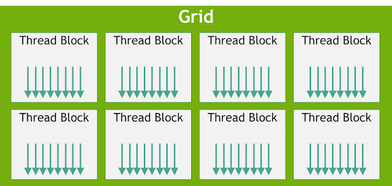

I'm sure all of you have watched The Simpsons, probably during your childhood. In the picture above, we can see a character known as Ralph Wiggum. In this scene, he utters some well-known words: "I'm in danger."
However, in our case, the caption reads, "Where am I?"
Let's picture Ralph as an individual thread whose sole task is to add a pair of elements from vectors A and B and write the result into vector C.
int index = threadIdx.x;Now, back to our dear friend Ralph. We've decided to picture him as an individual thread. However, Ralph is on a bus, as we can clearly see. And that bus is expected to have many students on board.
These other students could be, for example, other characters like Bart, Lisa, or even Milhouse. Each student represents an individual thread, which means the bus itself represents something known as a Thread Block, or simply a block.
0, 1, 2, 3, 4.
blockIdx. blockIdx
represents the bus number.
blockDim. blockDim simply
answers the question: How many threads or students
does each bus/block have?
threadIdx.
bus_number/blockIdx.x = 3
seat_number/threadIdx.x = 20blockDim.x = 30, we can determine
the student's unique number using the formula below:
unique_number = bus_number * blockDim.x + seat_numberWhich translates into:
unique_number = blockIdx.x * blockDim.x + threadIdx.x
unique_number = 3 * 30 + 20 = 110110.
In the kernel from the previous blog, we mapped our index as follows:
int index = threadIdx.x;blockIdx or
blockDim here. We were using only one
thread block, and we assumed that it had 100 threads
capable of performing parallel vector addition on
vectors A and B and writing the results into C.
However, there's an optimization we can introduce to make our thread block capable of handling the addition of the two vectors. We'll explore this later.
These thread blocks collectively form what is known as a Grid. A grid is simply a collection of thread blocks launched by a kernel.
This can be represented in the diagram below:

blockIdx.x, blockDim.x,
and threadIdx.x. They have the suffix
.x, representing the X dimension of
CUDA's indexing system.
0,
while the last index is N-1. In our case,
that would be 10-1 = 9. The same also
applies to threads.
threadIdx.x)
of 5 in a thread block with an index
(blockIdx.x) of 6, we want
to determine which element in vectors A and B that
thread will be responsible for processing.
To find this, we use the formula below:
index = blockIdx.x * blockDim.x + threadIdx.x
index = 6 * 100 + 5 = 605A[605] + B[605] and writing the result
into C[605].
__global__ void vector_addition(float* A, float* B, float* C, int N)
{
int index = blockIdx.x * blockDim.x + threadIdx.x;
if (index < N)
{
C[index] = A[index] + B[index];
}
}N = 1000.
if (index < N)
ensures that threads whose calculated indices exceed
the size of our vectors do not attempt to access
memory outside their allocated bounds.